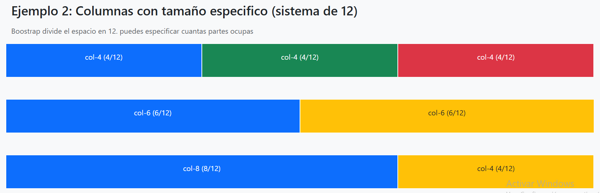
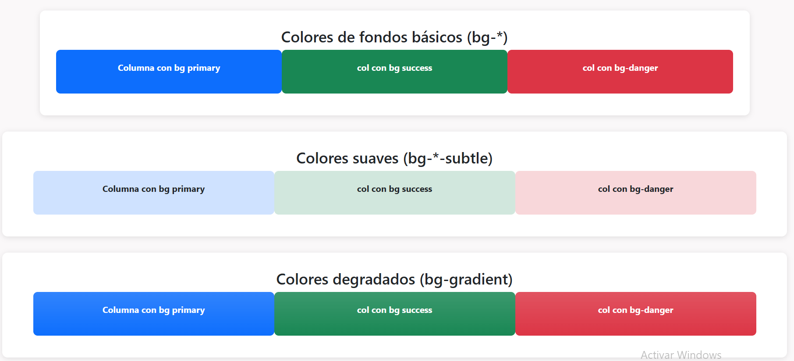
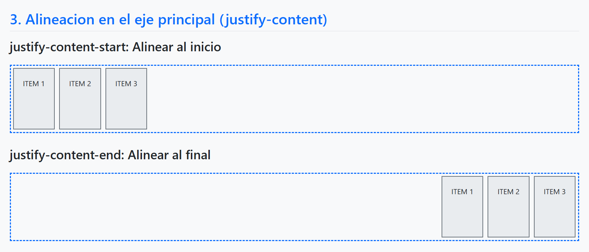
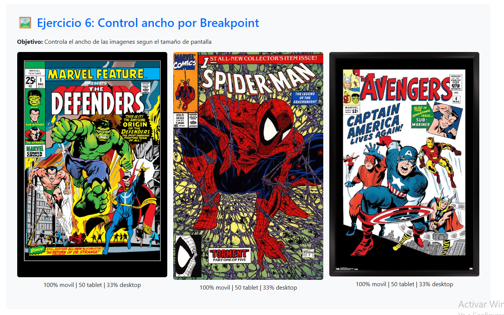
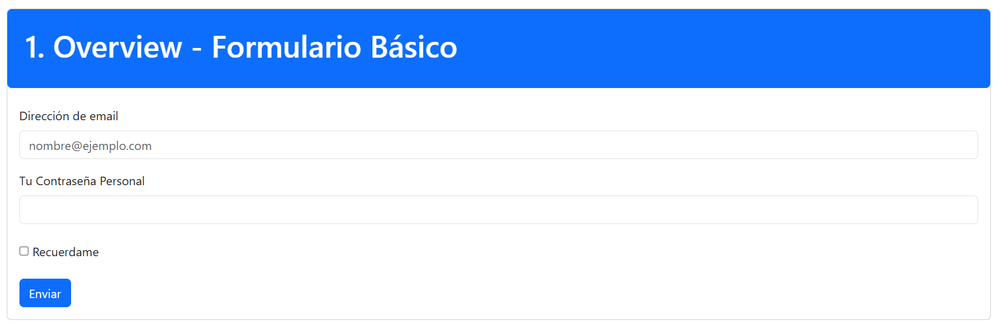
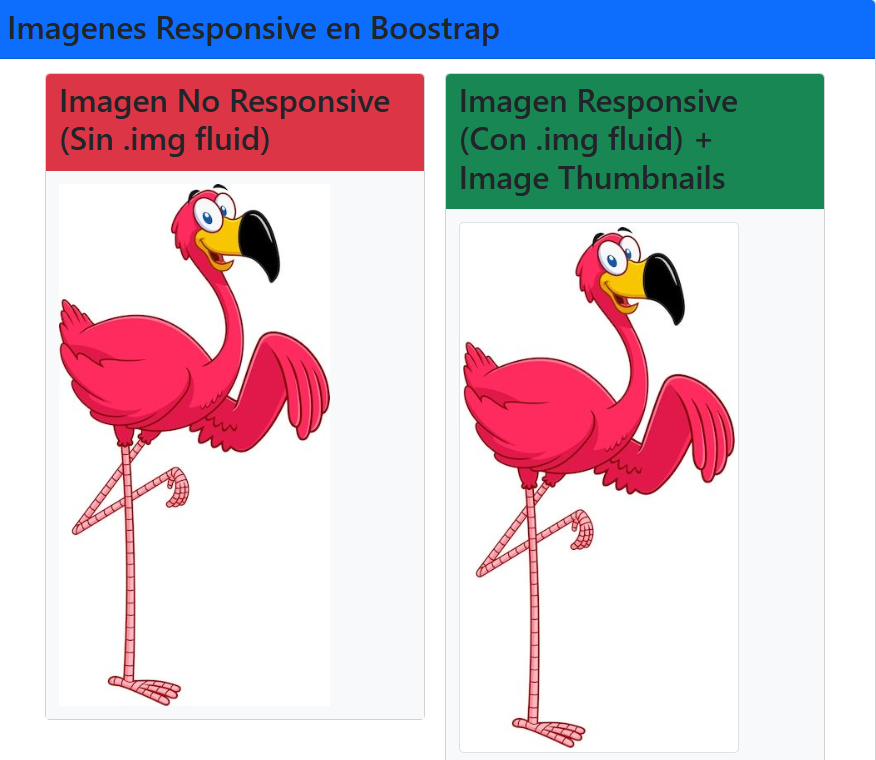

Parte 2: CSS3, VSC, Bootstrap
This is a lead paragraph. It stands out from regular paragraphs.
CSS 3
¿Que es CSS?
CSS (Cascading Style Sheets, o Hojas de Estilo en Cascada) es un lenguaje de diseño para páginas web. Su función principal es dar estilo y formato al contenido HTML, como colores, tipografías, tamaños, márgenes, disposición de elementos y animaciones.
Boostrap
¿Que es Boostrap?
Bootstrap es un framework de desarrollo front-end que facilita la creación de sitios web y aplicaciones web responsivas y con diseño atractivo. Incluye HTML, CSS y componentes JavaScript predefinidos, como botones, menús, formularios y barras de navegación, para que los desarrolladores no tengan que diseñar todo desde cero.
Mis Proyectos Personales
Aprende a manejar cols y Rows
Este HTML es una práctica de Bootstrap 5 donde se muestra cómo usar el sistema de filas (.row) y columnas (.col). Incluye ejemplos de columnas automáticas, columnas con tamaños específicos (usando el sistema de 12 partes), columnas responsivas que se adaptan a móviles y tablets (.col-md-*) y múltiples filas dentro de un mismo contenedor. También utiliza utilidades de Bootstrap como colores de fondo, texto, padding, margin y bordes para visualizar mejor la distribución de las columnas y su comportamiento en diferentes tamaños de pantalla.

Explorando Fondos y Estilos en Columnas con Bootstrap
Este HTML es una práctica de Bootstrap 5 enfocada en mostrar los diferentes estilos de colores de fondo para columnas. Incluye ejemplos de colores básicos (bg-*), colores suaves/pasteles (bg-*-subtle), colores con degradado (bg-gradient), colores con bordes y colores oscuros y claros, aplicados a columnas dentro del sistema de filas (.row). Además, utiliza estilos personalizados con padding, margen, bordes redondeados y sombras para mejorar la presentación visual de cada bloque de ejemplo.

Aprende a manejar cols y Rows
En esta página se muestra un diseño de sección de atención al cliente utilizando Bootstrap 5, donde se presentan las distintas formas de contacto con la empresa a través de teléfono, redes sociales, chat y formularios de correo. Se utilizan tarjetas (.card) organizadas en columnas responsivas para mostrar la información de manera clara y ordenada, junto con un navbar superior y un footer con productos y enlaces a redes sociales. La página combina componentes de Bootstrap como botones, alertas, badges y utilidades de espaciado y colores para crear un layout completo, moderno y fácil de navegar, adaptado a distintos tamaños de pantalla.
Manual Visual de Flexbox en Bootstrap 5
Este documento muestra de forma práctica cómo usar Flexbox en
Bootstrap 5, explicando desde lo esencial —activar el modo flexible con
d-flex— hasta funciones avanzadas como dirección de los elementos
(flex-row, flex-column), alineación en ambos ejes
(justify-content y align-items), control individual con
align-self, envoltura (flex-wrap), distribución de espacio
(gap), crecimiento y encogimiento de elementos (flex-grow,
flex-shrink) y orden (order), además de cómo aplicar todas
estas clases de forma responsiva según el tamaño de pantalla. En resumen, es una
guía completa para organizar, alinear y distribuir elementos de forma flexible
usando solo clases de Bootstrap.

⭐ Bootcamp de Imágenes Responsive con Bootstrap 5
Este documento presenta una serie de 10 ejercicios prácticos diseñados
para aprender y dominar el uso de
imágenes responsive con Bootstrap 5. A lo largo del
contenido se trabajan técnicas como el uso de
.img-fluid para adaptar imágenes al ancho del contenedor,
.img-thumbnail para crear miniaturas, clases de
bordes como .rounded, .rounded-circle y
.rounded-pill, así como métodos de alineación mediante
.float-start y .mx-auto. También se practica el control del
tamaño con breakpoints, el uso de
<figure> y <figcaption>, la integración de
imágenes en cards y la creación de una
galería responsive completa usando .ratio y el sistema de
grid.

Explorando Todos los Form Controls de Bootstrap 5
Este código presenta una serie de ejercicios prácticos de
formularios con Bootstrap 5.3, organizados en
tarjetas mediante el componente .card. A lo largo de los
ejemplos se muestran distintos tipos de inputs y
controles de formulario, usando clases como .form-control,
.form-check, tamaños modificados
(.form-control-sm y .form-control-lg), campos
readonly, elementos deshabilitados, selectores de
fecha, color y áreas de texto. El documento sirve como práctica para comprender cómo
Bootstrap estiliza y estructura formularios
modernos de forma simple, responsiva y visualmente consistente.

Ejemplos de Imágenes Adaptativas y Layout Responsivo
Este documento muestra diversos ejemplos del uso de imágenes
responsive y técnicas de
alineación de contenido en Bootstrap 5.3. Se compara
una imagen sin la clase
.img-fluid con otra que sí utiliza .img-fluid y
.img-thumbnail, demostrando cómo estas
clases permiten que la imagen se adapte correctamente al ancho del contenedor. Además,
el código utiliza el sistema de
grid mediante .row y .col-md-6 para
distribuir el contenido de manera responsiva,
y presenta ejemplos de alineación horizontal empleando múltiples columnas y
tablas estilizadas con las clases
.table, .table-hover y .table-striped. En
conjunto, este archivo funciona como una
demostración práctica para comprender cómo Bootstrap gestiona imágenes adaptativas y la
organización del contenido en pantalla.
